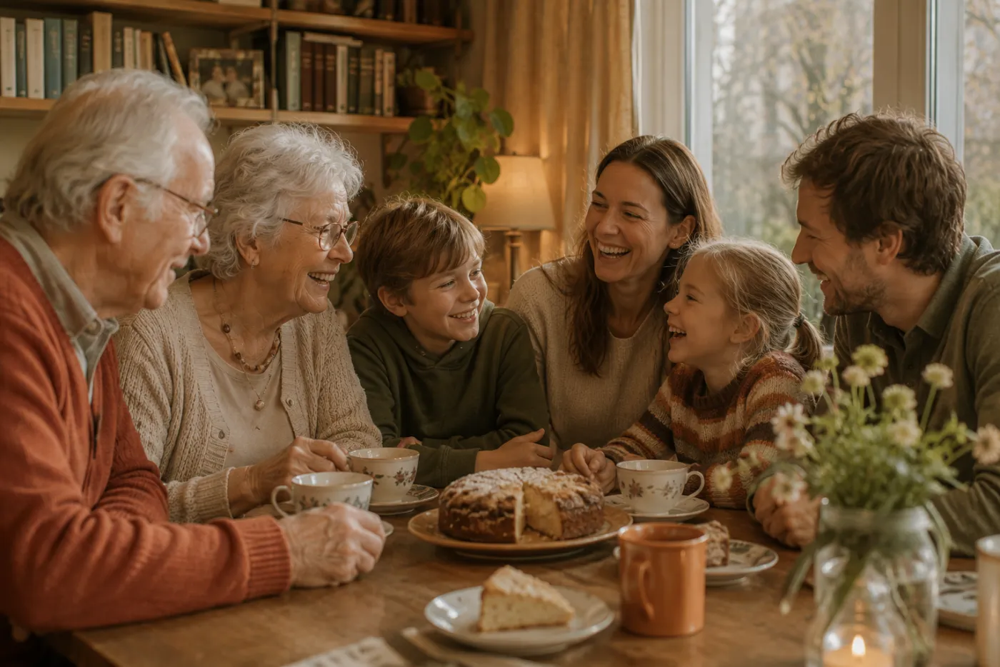

Babbl is there first and foremost for your mum or dad: so they can keep handling everyday things themselves. You're involved whenever they want you to be.
Much of what your parent asks you now, they can simply do themselves with Babbl: understand a letter, find an appointment, look something up. That saves you phone calls — but above all, it keeps your parent independent.
And when it's nicer to do something together, or real help is needed, your parent brings you in. With Babbl, you'll know straight away what it's about.

Always at your parent's initiative. This is what you then see in the Babbl app.
“Could you share this letter with Anne as well?”
“Could you let Peter know what time my appointment is?”
“Could you ask my daughter if she can take me to the dentist?”
“My daughter is doing the shopping later.”
There's no separate “family app”. Everyone uses the same Babbl app, in a simple or a full view. What someone can do depends on what your parent allows — not on which app it is.
Your parent can set up Babbl themselves, or you can do it together — linking their email, for example. Whoever starts can then invite others.
Adding someone with wider permissions happens at Babbl, in the home, out loud. That way nobody can simply look in from a distance — not even a scammer talking your parent into something over the phone.
Whatever your parent shares with you travels encrypted from Babbl to your phone.
We're looking for older adults and families who'd like to use Babbl and tell us what works and what doesn't. Leave your details and we'll be in touch as soon as there's a place.